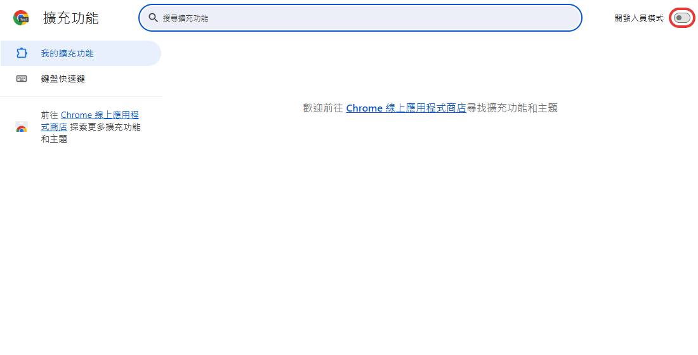
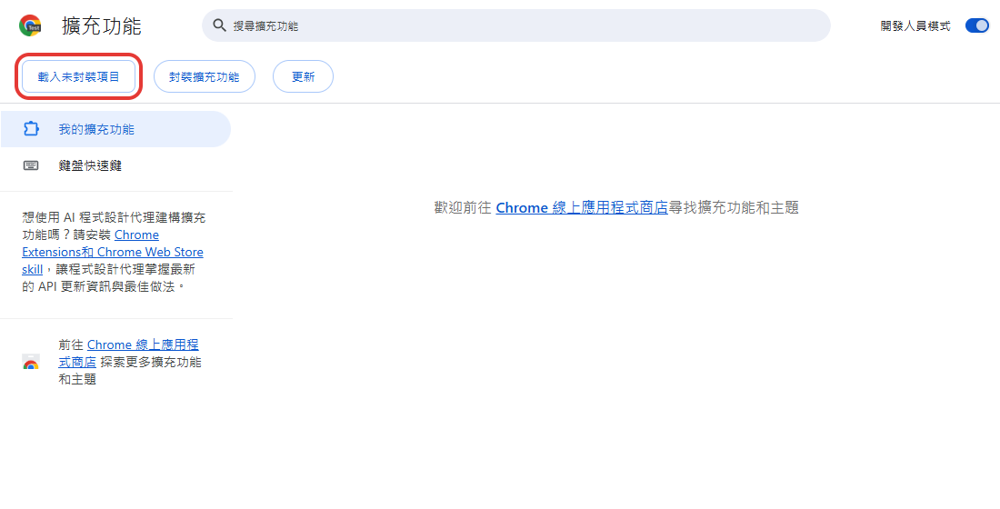
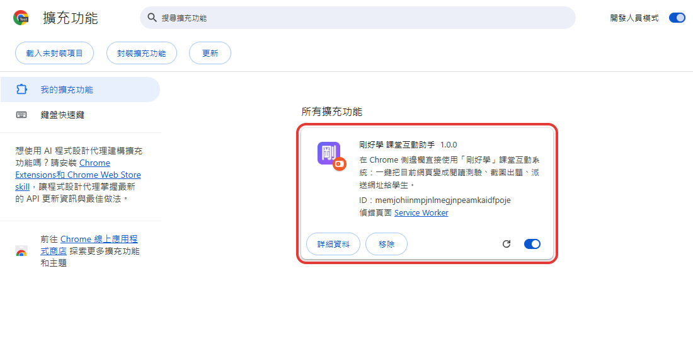
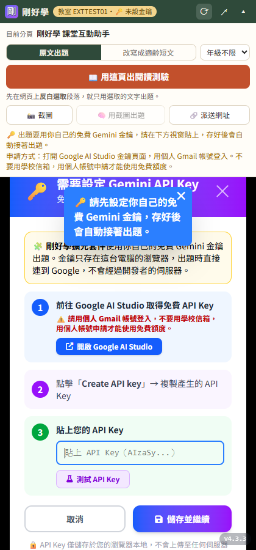
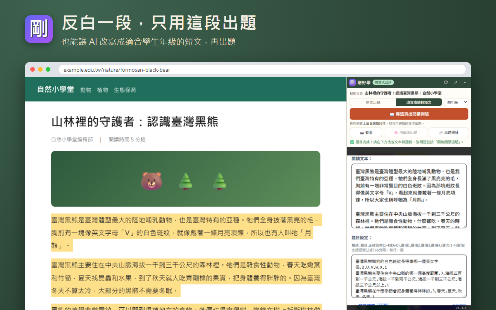
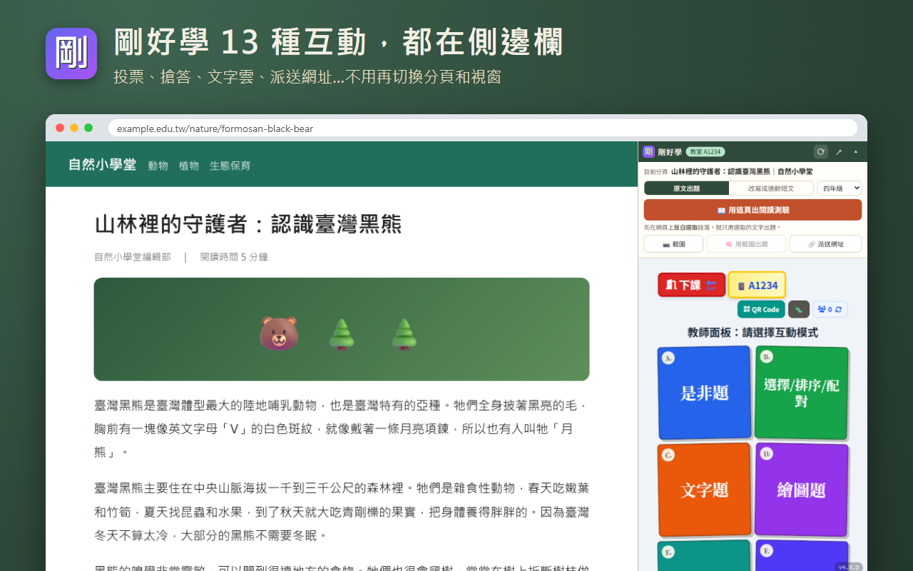

可以做什麼
側邊欄上方是小工具列，下方就是完整的剛好學。
依 PIRLS 四層次出 10 題選擇題，附正解與層次標記。
先反白一段文字，就只用那段出題；也能按右鍵出題。
選年級，AI 把網頁改寫成適合學生閱讀的文章再出題；也可切換成原文出題。
PDF、電子書抓不到文字？捲動截幾張（最多 8 張）讓 AI 辨識。
目前的網頁直接出現在學生畫面，按兩次確認避免誤觸。
是非、選擇、搶答、投票、文字雲、分組競賽……都在側邊欄。
安裝步驟（開發版）
用電腦版 Chrome（Windows／Mac 都可以）。Chromebook 若被學校管理政策關閉開發人員模式，就要等商店上架。
-
下載擴充套件壓縮檔
-
解壓縮到「不會搬動」的資料夾
在下載的檔案上按右鍵 →「解壓縮全部」。建議放在
文件\剛好學擴充套件。⚠️ 安裝後這個資料夾不能刪除、搬家或改名，Chrome 是直接從這裡讀取擴充套件的。打開資料夾應該會看到manifest.json這個檔案。 -
打開 Chrome 的擴充功能頁
在 Chrome 網址列貼上下面這行，按 Enter（基於安全，網頁不能直接幫你開這個頁面）：
chrome://extensions -
打開右上角的「開發人員模式」

-
按「載入未封裝項目」，選剛剛的資料夾
選到裡面直接有
manifest.json的那一層資料夾，再按「選取資料夾」。
-
看到「剛好學 課堂互動助手」卡片就完成了

最後按 Chrome 右上角的🧩拼圖圖示，在「剛好學 課堂互動助手」旁按📌圖釘，把它固定在工具列上。
第一次使用的設定
-
打開側邊欄
點工具列上的剛好學圖示，或按 Alt + Shift + K。
-
登入老師帳號、進入教室
在側邊欄下方按「我是教師」，用 Google 帳號登入，輸入或選擇教室代碼。
登入視窗沒有跳出來？按側邊欄右上角 ↗ 在新分頁登入一次，回到側邊欄按 ⟳ 就會同步。 -
設定你自己的免費 Gemini 金鑰
擴充套件出題使用老師自己的金鑰。第一次出題時會跳出設定視窗：
- 打開 Google AI Studio 金鑰頁面，用個人 Gmail 帳號登入。
- 按「Create API key」，複製產生的金鑰。
- 貼到視窗裡，按「測試 API Key」，再按「儲存並繼續」，就會自動接著出題。
🔑 不要用學校信箱，用個人帳號申請才能使用免費額度。金鑰只存在這台電腦的瀏覽器，出題時直接連到 Google，不會經過開發者的伺服器。 -
允許「讀取網頁內容」
第一次按「用這頁出閱讀測驗」或「截圖」時，Chrome 會詢問權限，請按「允許」。擴充套件只在你按按鈕的當下讀取這一頁。

怎麼使用
出完題目後，在下方剛好學檢查文本與題目，沒問題就按「確認並開始互動」，學生端就會收到。
📖 一鍵把網頁變成閱讀測驗
- 打開文章，選好年級（預設是「改寫成適齡短文」），按大大的「用這頁出閱讀測驗」。
- 約 10～30 秒產生 10 題，題目預覽會標出正解與 PIRLS 層次。
- 想讓學生讀網頁原文，切換到「原文出題」；之後會記住你的選擇。
✂️ 只用一段、或改寫成適齡短文
- 先在網頁上反白想用的段落，再按出題，就只用選取的文字。
- 也可以在反白文字上按右鍵 →「用選取文字出閱讀測驗」。
- 預設的「改寫成適齡短文」會依年級改寫文章後再出題，用字、長度都更適合學生。

🧩 其他功能
- 📸 截圖：PDF、Google 文件抓不到文字時，捲動後多截幾張，再按「用截圖出題」。
- 🔗 派送網址：連按兩次，目前的網頁就出現在學生畫面。
- ▴ 收合工具列，讓下方剛好學更大；↗ 在新分頁開啟完整剛好學。
- 下方就是完整剛好學：投票、搶答、文字雲、分組競賽都能用。

更新到新版
- 從本頁重新下載壓縮檔，解壓縮後覆蓋原本的資料夾（同一個位置）。
- 到
chrome://extensions，在「剛好學 課堂互動助手」卡片按 ⟳ 重新載入。
等擴充套件在 Chrome 線上應用程式商店上架後，改從商店安裝就會自動更新；屆時記得把開發版移除，避免出現兩個。
常見問題
重開 Chrome 後擴充套件不見了？
多半是資料夾被搬走、改名或刪除了。請把資料夾放回原位置，或重新做一次「載入未封裝項目」。
按出題說「需要設定金鑰」或金鑰無效？
請確認是用個人 Gmail 帳號到 Google AI Studio 申請的金鑰（學校信箱申請的沒有免費額度），貼上後按「測試 API Key」看是否顯示有效。
抓到的文字太少或抓錯內容？
先在網頁上反白想要的段落再按按鈕。Chrome 內建頁面、線上應用程式商店、PDF 這類頁面基於安全讀不到文字，請改用「📸 截圖」。
登入的 Google 視窗沒有跳出來？
按側邊欄右上角 ↗ 在新分頁開啟剛好學並登入，回到側邊欄按 ⟳，登入狀態就會同步。
擴充套件會收集我的資料嗎？
只在你按按鈕或右鍵選單時讀取當下這一頁，沒有廣告也沒有使用分析。詳見隱私權政策。請不要擷取含學生姓名、成績等個人資料的內容。